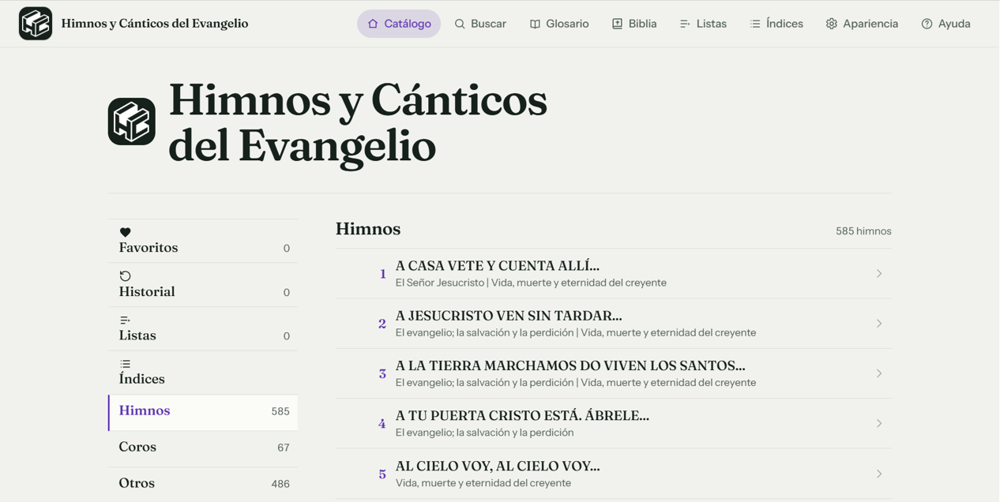

Versículos
Vista ilustrativa. En esta muestra la reproducción, los enlaces y los botones están desactivados.
Una experiencia renovada: más ligera, rápida y en todos tus dispositivos
A veces basta una frase para recordar un himno. Encuéntralo, vuelve a su letra y escucha su melodía desde un mismo lugar.
Prueba a buscarMás de 1.500 himnos y cánticos. Sin cuenta.
Prueba con cinco títulos del catálogo o elige uno para ver su vista en la app
Ejemplos tomados del catálogo
Vista ilustrativa. En esta muestra la reproducción, los enlaces y los botones están desactivados.
1.500+himnos y cánticos
1.600+melodías para escuchar
4secciones para explorar
Más ligero, en todas partes
Lo que antes exigía descargar más de 300 MB en Android, ahora cabe en un espacio mínimo (menos de 50 MB) con una fluidez radicalmente superior. Funciona en tu teléfono, tableta o computadora, sin importar el sistema operativo.
El cambio, en cifras
300 MB < 50 MB
El contenido completo, la Biblia y las partituras viajan contigo sin ocupar el espacio de antes.
Android, iPhone, iPad, Windows, Mac y Linux. La misma colección, desde el navegador que ya usas.
Añádela a tu pantalla de inicio con un solo toque, sin tiendas ni cuentas. Después, funciona sin conexión.
Todo en un mismo lugar
Entra por el recuerdo que tienes: un número, una frase, una letra que quieres leer o una melodía que quieres volver a escuchar.
Recorre las secciones o busca por número y por palabras que recuerdes.

Estudio y devoción unidos
66 libros y 1.189 capítulos disponibles sin conexión. Añade notas personales, marca versículos con colores personalizados y mantén un registro de estudio conectado directamente con los himnos.
Fidelidad musical
Cada himno conserva su archivo MIDI original y su página exacta en un PDF vectorial. Nada de grabaciones intermedias ni aproximaciones.
Más de 1.600 melodías se escuchan con un piano acústico muestreado, fiel al archivo original de cada himno.
Transpone, ajusta la velocidad y controla el volumen sin alterar la letra ni la partitura.
Un único PDF vectorial permite ampliar cada página sin perder definición, también a pantalla completa.
Va contigo, incluso sin señal
Olvida las descargas pesadas de más de 300 MB. Esta nueva versión web optimiza cada recurso para ocupar una fracción mínima de tu dispositivo. Instálala con un solo toque desde tu navegador y disfrútala sin conexión a internet, sin anuncios y sin necesidad de crear cuentas.
Conoce cómo empezóDe una idea pequeña a un himnario entero
Lo que empezó como un proyecto personal fue creciendo con cada nueva idea y con las personas que querían tener el himnario cerca.
Una aplicación de escritorio sencilla ayudó a aprender una nueva tecnología. Reunía los 585 himnos y 67 coritos del Himnario Venezolano.
Himnos y Cánticos del Evangelio
Disponible para Android, iOS, Windows, Mac y Linux. Funciona offline tras la primera carga.